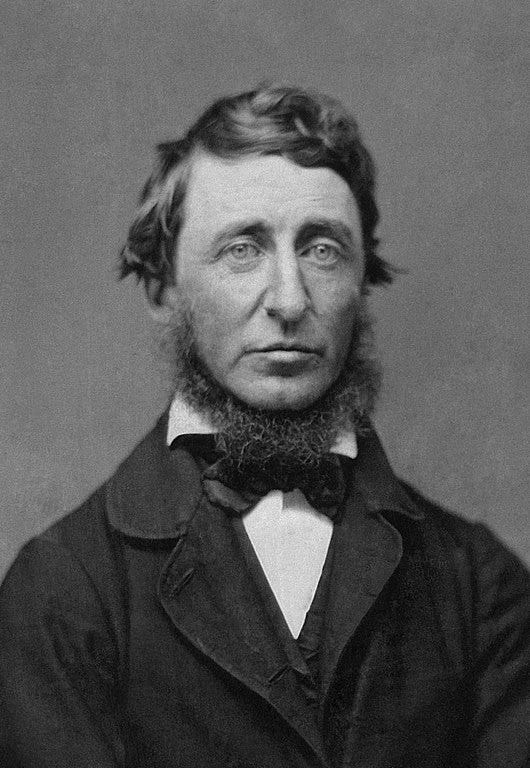
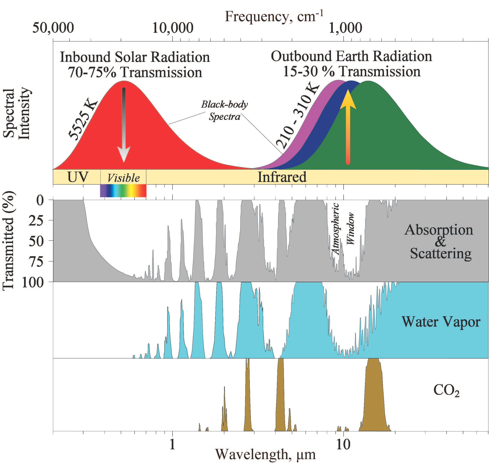
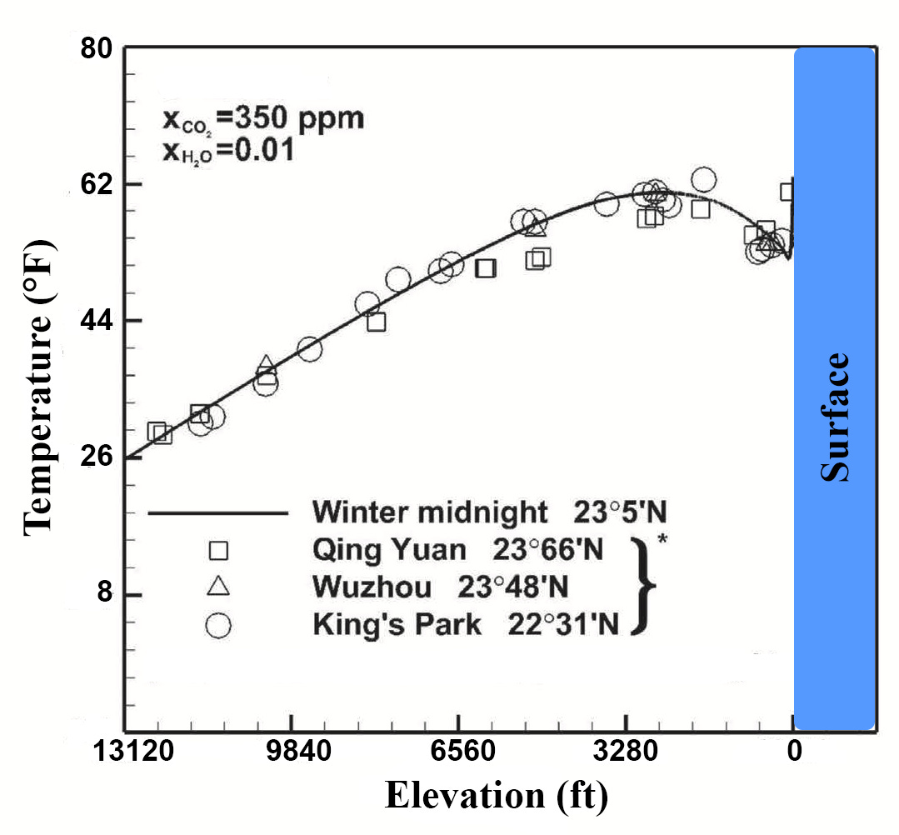
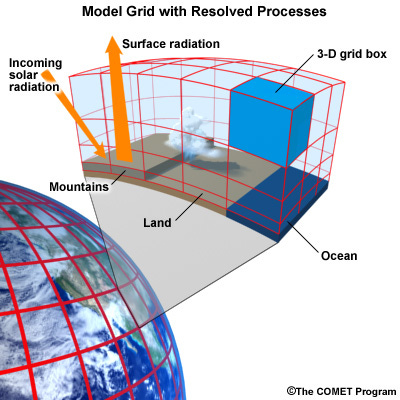
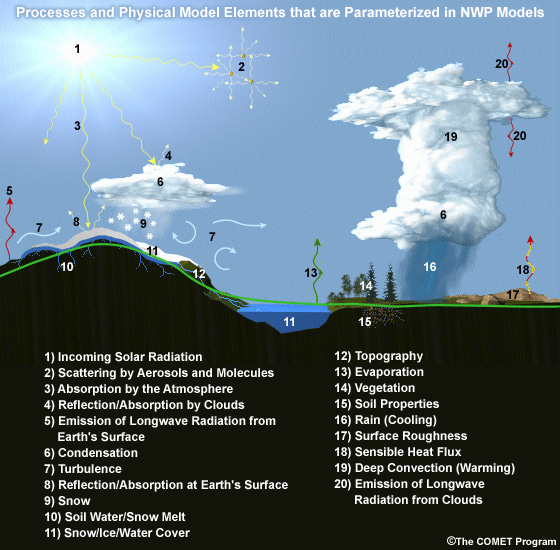

I’m Jonathan Burbaum, and this is Healing Earth with Technology: a weekly, Science-based, subscriber-supported serial. In this serial, I offer a peek behind the headlines of science, focusing (at least in the beginning) on climate change/global warming/decarbonization. I welcome comments, contributions, and discussions, particularly those that follow Deming’s caveat , “In God we trust. All others, bring data.” The subliminal objective is to open the scientific process to a broader audience so that readers can discover their own truth, not based on innuendo or ad hominem attributions but instead based on hard data and critical thought.
You can read Healing for free, and you can reach me directly by replying to this email. If someone forwarded you this email, they’re asking you to sign up. You can do that by clicking here .
Today’s read: 13 minutes.

“This fair homestead [Earth] has fallen to us, and how little have we done to improve it, how little have we cleared and hedged and ditched! We are too inclined to go hence to a “better land”, without lifting a finger, as our farmers are moving to the Ohio soil; but would it not be more heroic and faithful to till and redeem this New England soil of the world? The still youthful energies of the globe have only to be directed in their proper channel. Every gazette brings accounts of the untutored freaks of the wind— shipwrecks and hurricanes which the mariner and planter accept as special or general providences; but they touch our consciences, they remind us of our sins. Another deluge would disgrace mankind. We confess we never had much respect for that antediluvian race. A thoroughbred businessman cannot enter heartily upon the business of life without first looking into his accounts. How many things are now at loose ends? Who knows which way the wind will blow tomorrow? Let us not succumb to nature. We will marshal the clouds and restrain tempests; we will bottle up pestilent exhalations; we will probe for earthquakes, grub them up, and give vent to the dangerous gas; we will disembowel the volcano, and extract its poison, take its seed out. We will wash water, and warm fire, and cool ice, and underprop the earth. We will teach birds to fly, and fishes to swim, and ruminants to chew the cud. It is time we had looked into these things.” [Emphasis mine] Henry David Thoreau, “ Paradise (To Be) Regained .” first published in The United States Magazine and Democratic Review , November 1843.
This quote from Thoreau, considered the great-grandfather of the environmental movement, exhorts us to control nature to support Earth. However, he also reminds us that loose ends are a part of life!
It’s time to tie up a loose end or two (and perhaps start another thread) about the group I referred to previously as the “Facebook troll patrol”. The most common objection of this often anonymous group (excluding the pointless and seemingly inexhaustible mudslinging of the ad hominem and innuendo types) is that “global warming is just part of a natural cycle”. This is very much akin to objections by those of a religious inclination, who have provided me with a Biblical context for events yet to come (gotta love the Book of Revelations and its myriad interpretations). I’m not going to disparage any group of individuals, their beliefs are their own, and I am neither preacher nor prophet. But I can share my belief that we should do whatever we can, within our power, to control natural cycles: I think of it this way. Winter is also part of a natural cycle, and while it’s possible to wear summer clothes in a blizzard, it’s not advisable, and it could prove deadly. God may have created the world, but I don’t believe He intended Man to be a passive observer. Thoreau would agree.
Next, there are the ostriches, who, while tacitly accepting the fact of global warming, fall back on the benevolence of Mother Nature (on the one hand) or helplessness (on the other). The former group believes we shouldn’t do anything because doing something will be tantamount to “fooling Mother Nature” 1 . The latter group believes it’s not worth worrying because humans can’t do anything about it anyway. That’s more of an Alfred E. Neuman approach (“What, me worry?), 2 , which would be funny if it wasn’t so apathetic.
Then, there are the malevolent trolls, a pernicious group that some call the “deniers”. These malcontents take these sorts of objections to the next level and attempt to throw facts back into the face of legitimate scientists. They generally have some facts to base their opinions on, but their arguments use flawed logic. The logic presented by these oversimplifiers generally takes the form of the False Dilemma . In other words, they consider climate change as a singular phenomenon with but one clear explanation that rules out all others. The argument tends to go something like this:
-
Climate changes have happened in the past without humans (true, see the fossil record).
-
Because of this history, we reasonably expect climate change to happen at some point in the future regardless of what we do now (true, even if we’re approaching the End Times)
-
Therefore humans must have had no impact on setting the stage for future climate change (demonstrably false).
<Venting on> The next time you run into one of these contrarians, ask them what they think we should do if a meteor were taking dead aim at earth, with models predicting the extinction of human life upon impact. Should we do something about it? I can’t answer the question for anyone else, but I sure as hell would want us to try anything that might avoid that outcome, and I think most of us (and a few Hollywood directors) would agree. Then ask them about an impending Ice Age—we know one will come someday. Should we do anything to keep it from happening? My bet is you’ll get the same answer.
Now, we know that we know that we know that Earth is getting warmer. We’ve measured it 3 . Do the reasons behind the warming really matter? If we can’t figure out how to control the planet’s thermostat, then we won’t have the tools to do anything when the next Ice Age looms. If you’re asking the eco-ethical question of “Should we?” that’s your prerogative. But regardless of that answer, the first eco-technical question is “Can we?” I believe that our discussions should be about ways to keep a small temperature change from becoming a catastrophe, rather than whether the problem exists in the first place or whether humans are responsible for it. <Venting off>
OK. Now on to a bit of meat. I’ve had two interactions on Facebook that have followed my urgings and have brought data to the table, both of which have something to do with energy transfer. So, let’s first examine how heat (thermal energy) can be transferred, referring to our everyday experience:
-
Conduction . Think “touching the hot stove” here. When materials contact one another, heat moves from the hotter to the colder one.
-
Convection . Think “feeling the warm wind” here. Heat also moves when warmer materials are moved from one point to another.
-
Radiation . Think “basking in the sunbeam” here. Heat can also be moved without direct contact through the emission and absorption of photons.
This latter mechanism pertains to global warming, although all three move heat around the planet. It should be pretty obvious that Earth can only gain or lose energy through radiation because at the edge of the atmosphere is nothing but outer space. There’s nothing to touch or move around! So, the temperature of Earth is a balance between how much radiation it takes in minus how much it sends out.
But, how does the "greenhouse effect” happen, exactly? Here’s the background:

{kind=link}
Walking through this figure, from top to bottom: What’s shown is the part of the electromagnetic spectrum that ranges from the ultraviolet (UV) through the visible (what we can see) to the infrared. From basic physics, electromagnetic radiation is emitted from all objects. In this process, all wavelengths are present, with a peak that depends on the object's temperature, creating a “black-body spectrum”. The top panel shows the (simplified) black-body spectra of both the sun and the earth. The sun confers in most of its radiant energy with wavelengths in the visible while Earth radiates most of its energy to outer space with wavelengths in the infrared. Surfaces of different temperatures have different spectra; What is shown is a progression of black-body spectra for Earth between 210K (about -60°C/-80°F) and 310K (37°C/98°F)
The second (gray) panel shows what Earth’s atmosphere does with this energy, in both absorption (which retains heat) and scattering (which redirects photons depending on wavelength. Scattering is what makes the sky blue (and, sometimes, red). The important factor for global warming is absorption. The third and fourth panels show two important absorption components: water vapor and carbon dioxide. It’s notated as the inverse of absorption, “Transmitted (%)”, so that it can be visualized as a window that determines the amount of radiant energy that can pass at a given wavelength. Unlike radiation, absorption is not uniform; Different molecules absorb specific wavelengths according to their molecular properties, which scientists can measure in the lab.
So, what happens is that sunlight (mainly visible) mostly passes through our atmosphere. Up to 75% of the sun’s energy reaches the surface, where it is absorbed (100% if the surface is black) or reflected (if the surface is white or colored). The absorbed sunlight is converted into heat, which is distributed using the three mechanisms I described above. The Earth can release some of this heat as infrared radiation through the “atmospheric window”, but a lot is retained. Only 15-30% passes through. The rest warms the planet (during the day), so the specific nature of the atmospheric window in the infrared region directly determines how hot or cold the Earth is.
Climate scientists assert that increasing the amount of CO2 in the atmosphere retains more heat, which results in global warming. This is where the meatier objections I mentioned have come from.
The first data-based objection to this assertion comes from Steve Clark, an engineer. To summarize his concern, he asks us to examine the figure above, paying specific attention to the rightmost CO2 peak, which is where Earth is radiating a lot of infrared energy but where CO2 is absorbing a lot as well. Steve points out, correctly, that at this point in the spectrum, “[t]wo thirds of this [peak] wavelength is already absorbed by water vapor. The amount of CO2 to absorb the rest of this IR wavelength was surpassed years ago.” Generalizing his point, it would suggest that all of the radiant energy that could be absorbed by CO2 already is. So, increasing the concentration has no net effect.
I have a couple of problems with this objection, but, as always, you’re welcome to your own conclusions. My first problem is that the bands for absorption are not really that narrow, and there is more than one relevant band in the atmospheric window. So, while Steve might be correct about what’s happening at carbon dioxide’s maximum absorbance, there are “shoulders” on the peaks that can still change with concentration. So, carbon dioxide concentrations will affect the radiation of heat into outer space. My second problem is that the atmosphere has a known structure (the air gets thinner at high altitudes, definite layers, etc.). So, while this simplified figure shows transmission all the way through the atmosphere, the pertinent absorption occurs at ground level since heat retained there will warm the oceans and more strongly affect weather patterns.
It’s a complicated and subtle question, so I looked into it more deeply and found a report that correlated the characteristic infrared absorbance spectra of CO2 and water vapor with measured temperatures in the troposphere:

I haven’t checked the math (24 equations and 8 figures factor into the above, but it’s been peer-reviewed), but this is the right way to think about extending the problem from the laboratory to the planet. It fits with the previous idea that air temperature is adjusted by water vapor and carbon dioxide in the air.
A second data-based objection comes from David Dibbell, another engineer, who referred me to the University Corporation for Atmospheric Research (UCAR) training module " Introduction to Climate Models ”. This is a great resource if you really want to get into the weeds of climate modeling for yourself, so kudos to David for pointing out this resource. His main issue (which I must condense) is that some parts of General Circulation Models (GCMs) must be “parameterized”, which means that portions of these models are too complex to be calculated from first principles and are, instead, approximated with calculations that (in principle) lead to the same quantitative result. In climate modeling, this could be problematic since the historical parameters may not be accurate in the future, particularly as we enter an unprecedented situation.
Specifically, David’s exemplary concern is
“[M]odels account for convective weather by parameterization, which obscures the power of the localized but widely prevalent operation of the atmosphere to the modeler/investigator. This leaves all GCM's [Global Circulation Models] with no diagnostic or predictive power concerning GHG's [greenhouse gases], because the very obvious, powerful, and prevalent atmospheric processes that move heat and mass vertically at sub-grid scale cannot be directly simulated.”
Translation: The models cannot predict the consequences of global warming because heat transfer within the atmosphere mostly occurs by convection. The models lack sufficient detail to account for subtle processes that happen more locally than the resolution of the model (the grid-scale):

In other communications, he compares the energy transfer involved in rainfall (184 watts per square meter per quarter-inch of rain) to the forcing associated with carbon dioxide (single-digit watts per square meter), implying that modeling errors from carbon dioxide differences would be overshadowed by the energy transfer from a light rainstorm. That’s a fair point. Note that he’s not saying global warming isn’t happening (that’s radiative, rather than convective, heat transfer). He’s saying that climate models lack predictive power because the temperature changes are overwhelmed by other factors. Again, you’re welcome to come to your own conclusions, and David and I agree that the models are inadequate—every model is wrong to some extent. But my concern (echoed earlier) is. “Are they useful?”
Personally, I don’t buy David’s argument that errors in parameterization render the models useless. First of all, in the specific example, rainfall is occasional, regional, and tends toward an average so that the errors in energy transfer will be smaller with time—it may make a difference in a rainforest climate, but in a desert climate, not so much. Second, the climate is different than the weather in many ways, particularly time frames. “Forcing” due to carbon dioxide is a constant that changes the planet's energy balance over a long time frame, so its effects will be more sustained on millennial climate patterns than on seasonal weather. Finally, David’s objections would also be valid for weather models. But, as we’ve seen, weather models have improved over time.
Here’s what UCAR says about the connection:

“The atmospheric component of the climate model is very similar to a numerical weather prediction model. The model solves for both resolved processes, like motion, and parameterized processes, like cloud physics.
The model numerically solves the equations of motion at each grid point. In other words, the model directly simulates motion in the atmosphere between grid layers by balancing the pressure gradient force, Coriolis effect, and forces resulting from curvature in the flow.
There are also parameterized dynamics for aspects of atmospheric flow too small to resolve, such as gravity wave drag. We know from theory and observations that mountains generate gravity waves that propagate up into the atmosphere and transport momentum from the surface up into the atmosphere. This affects elements of the larger-scale flow such as the placement of the jet stream and storm tracks and the location and strength of planetary scale atmospheric waves.
Most physical processes must be parameterized. These include the following:
Radiative transfer, or how sunlight and long-wave radiation propagate up and down through the atmosphere.
Processes related to cloud formation resulting from both large-scale (resolved) lifting and from sub-grid scale convective processes. Traditionally, these processes have been hardest to parameterize.
Boundary layer and surface exchange processes that occur on scales much smaller than a typical grid box.
Dissipation of kinetic energy or momentum away from the boundary layer.
None of these processes are unique to climate models. Every weather forecast model includes them, too. If you look "under the hood" of any weather model, this is what you're going to find.” [Emphasis mine]
As I mentioned before, weather models (notably for hurricane predictions 4 ) continue to improve over time. This is the operational definition of “useful”. If the same parameterized atmospheric models are used for climate work for weather prediction, I have confidence in them.
It’s interesting how the brain works. This brought me back to my childhood TV experience, with a commercial whose tagline was “It’s not nice to fool Mother Nature.” The ad was for Chiffon Margarine, a product that was discontinued over a decade ago.
Another blast from my past. The quote is attributed to the fictitious mascot of Mad Magazine, another staple of my youth and also now defunct.